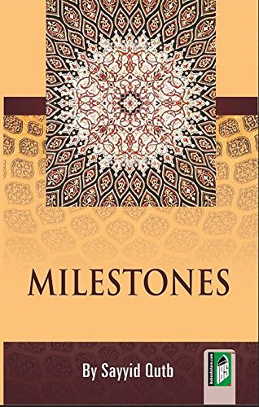

Olavo de Carvalho
Autor é teórico da Fraternidade Muçulmana. Diz explicitamente que o muçulmano tem a obrigação de tentar derrubar um governo não-islâmico do seu país.
Ver também
-
"There is only one place on earth which can be called the home of Islam (Dar-ul-Islam), and it is that place where the Islamic state is established and the Shariah is the authority and God's limits are observed, and where all the Muslims administer the affairs of the state with mutual consultation. The rest of the world is the home of hostility (Dar-ul-Harb). A Muslim can have only two possible relations with Dar-ul-Harb: peace with a contractual agreement, or war. A country with which there is a treaty will not be considered the home of Islam."
A Muslim's Nationality And His Belief By The Martyr Of Islam by Syed Qutb (http://islamicweb.com/resources/nationality.htm) - Sayyid Qutb: The foremost duty of Islam in this world is to depose Jahiliyyah (unbelievers) from the leadership of man, and to take the leadership into its own hands and enforce the particular way of life which is its permanent feature. (https://www.thereligionofpeace.com/pages/quran/loyalty-to-non-muslim-government.aspx)
Mais livros

Milestones
Sayyid Qutb